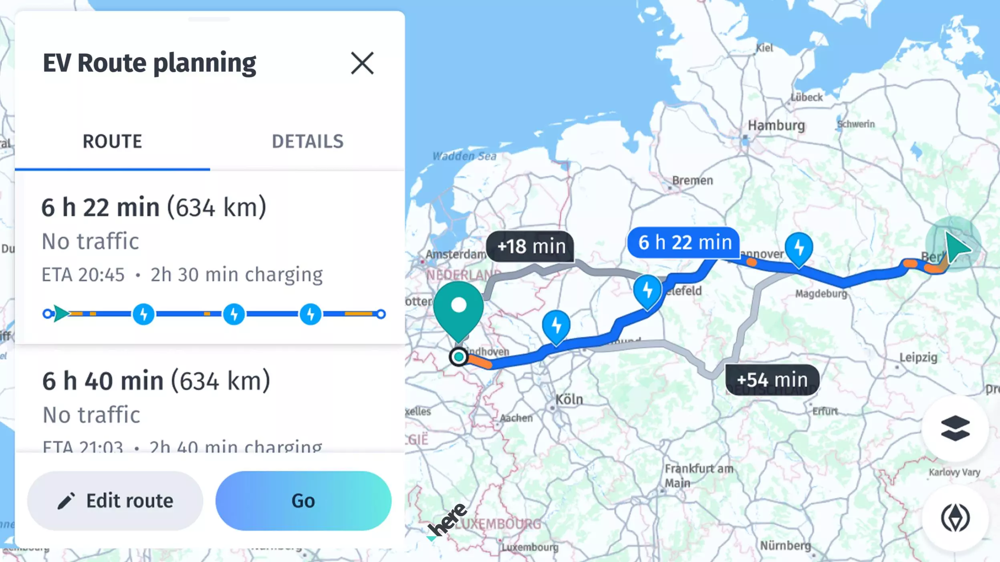

Get started with Routing
The HERE SDK provides a full-fledged RoutingEngine to calculate the best route directions from A to B, including multiple waypoints and localizable maneuver instructions for each turn.
Specify your preferences by setting the desired route type (fastest or shortest) and various route options (such as speed profiles, route restrictions, vignette options, and more) to find the perfect route that saves the most energy: with our advanced routing technology and our dedicated EV route planning support HERE helps you to make the planet cleaner and safer .

Feature overview:
- Calculate routes: Calculate routes with multiple waypoints for various transport modes.
- Isoline routing: Calculate isoline polygons to represent the area of reach from a given point based on time, distance or fuel consumption.
- Search along a route: Search for places along an entire route (this feature is described in the Search section).
- Import routes / route matching: You can import routes from other APIs.
Initialize the RoutingEngine
Start your trip by creating the route engine in this manner:
try {
_routingEngine = RoutingEngine();
} on InstantiationException {
throw ("Initialization of RoutingEngine failed.");
}
Creating a new RoutingEngine instance can throw an error that we have to handle as shown above. For example, such an error can happen when the HERE SDK initialization failed beforehand.
Note
It is not possible to initialize this engine during the Application's onCreate() method. Any other point in time is fine. For example, a good place to initialize this engine may be in an Activity's onCreate()-method.
Calculate routes
As a next step, you can calculate the route based on two waypoints - a starting location and a destination (both of type Waypoint that holds a GeoCoordinates instance). Below we set default CarOptions to calculate a route that is optimized for cars:
Future<void> addRoute() async {
var startGeoCoordinates = _createRandomGeoCoordinatesInViewport();
var destinationGeoCoordinates = _createRandomGeoCoordinatesInViewport();
var startWaypoint = Waypoint.withDefaults(startGeoCoordinates);
var destinationWaypoint = Waypoint.withDefaults(destinationGeoCoordinates);
List<Waypoint> waypoints = [startWaypoint, destinationWaypoint];
_routingEngine.calculatEVRoute(waypoints, CarOptions(),
(RoutingError? routingError, List<here.Route>? routeList) async {
if (routingError == null) {
// When error is null, it is guaranteed that the list is not empty.
here.Route route = routeList!.first;
_showRouteDetails(route);
_showRouteOnMap(route);
_logRouteViolations(route);
} else {
var error = routingError.toString();
_showDialog('Error', 'Error while calculating a route: $error');
}
});
}
You can call calculateRoute() multiple times. For example, you can call it to calculate routes with different routing options in parallel.
Note
When setting a Waypoint you can influence on which side of the road a pedestrian or a driver should reach the stop by setting a sideOfStreetHint.
If a pedestrian or a driver is moving, a bearing value can help to determine the initial direction by setting startWaypoint.headingInDegrees = currentLocation.bearingInDegrees;. This can help to avoid unnecessary u-turns if the next destination lies in the back of a driver. For pedestrians this can lead to better routes as unnecessary street crossings can be avoided.
Each route calculation will be performed asynchronously. You will get a Route list or a RoutingError that holds a possible error when completed. If all goes well, RoutingError is null. In case of an error, the route list is null. For example, the engine cannot calculate routes if a route is not feasible for the specified mode of transportation.
Note
If there is no error, the route list will contain only one result. By specifying the number of route alternatives via the route options, you can request additional route variants. By default, a route will be calculated with no route alternatives.
The _showRouteDetails()-method from the code snippet above is used to show more route details including maneuver instructions. You can find the full source code in the accompanying example app. Maneuver instructions are also explained in greater detail below. The _showRouteOnMap()-method contains an example, how to render a route on the map. We will explain this shortly in the section below.
Get ETA and traffic information
Additional information on the route - such as the estimated time it takes to travel to the destination (ETA) and the total length of the route in meters - can be retrieved from the Route object as shown below:
// estimatedTravelTimeInSeconds includes traffic delay.
int estimatedTravelTimeInSeconds = route.duration.inSeconds;
int estimatedTrafficDelayInSeconds = route.trafficDelay.inSeconds;
int lengthInMeters = route.lengthInMeters;
The estimated time of arrival (ETA) can be displayed in different time zones, which may vary depending on the device's geographic location. For instance, when calculating a route, the device's current time zone may differ from that of the destination. Consider a scenario where a user calculates a route from Berlin to London - each city operates in a different time zone. To address this, you can display the ETA in multiple time zones: the device's current time zone (Berlin), the destination's time zone (London), and UTC (Coordinated Universal Time), which serves as a global reference.
Here's an example of how the same ETA can vary across different time zones:
| ETA based on the device's current time zone in Berlin | ETA based on the destination's time zone in London | ETA in UTC |
|---|---|---|
| 8:30 AM | 7:30 AM | 6:30 AM |
To calculate the ETA in the device's time zone, we use the following method. This method involves retrieving the estimated travel time from a Route object, initializing the current date and time, adding the travel time, and formatting the result.
/// Returns the ETA (as a string in ‘HH:mm’ format) in the current device’s timezone,
/// derived from the estimatedTravelTimeInSeconds, which is sourced from the Route object.
///
/// @param route Original route object from RoutingEngine.
/// @return A string representing the ETA in "HH:mm" format.
String getETAinDeviceTimeZone(Route route) {
int estimatedTravelTimeInSeconds = route.duration.inSeconds;
// Get the current date and time
DateTime now = DateTime.now();
// Add the estimated travel time (in seconds) to the current time
DateTime eta = now.add(Duration(seconds: estimatedTravelTimeInSeconds));
return DateFormat('hh:mm a').format(eta);
}
To calculate the ETA in the destination's time zone, we use the following method. This involves obtaining the arrival location's local time and the difference between the local time at the destination and Coordinated Universal Time (UTC).
/// Calculates the estimated time of arrival (ETA) in the destination timezone for a given route.
/// It is possible that the destination can be in a different timezone compared to the source.
/// Therefore, we are also calculating the ETA in the destination timezone.
///
/// @param route Original route object from RoutingEngine.
/// @return A string representing the estimated time of arrival in the destination timezone, formatted as "HH:mm".
String getETAinDestinationTimeZone(Route route) {
DateTime destinationDate = getArrivalLocationTime(route).localTime;
return DateFormat('hh:mm a').format(destinationDate);
}
To calculate the ETA in Coordinated Universal Time (UTC) for a given route, we use the following method. This method ensures that the ETA is represented in the primary time standard by which the world regulates clocks and time.
/// Calculates the estimated time of arrival (ETA) in Coordinated Universal Time (UTC) for a given route.
/// UTC (Coordinated Universal Time) is the primary time standard by which the world regulates clocks and time.
///
/// @param route Original route object from RoutingEngine.
/// @return A string representing the estimated time of arrival in UTC, formatted as "HH:mm".
String getEstimatedTimeOfArrivalInUTC(Route route) {
DateTime utcDate = getArrivalLocationTime(route).utcTime;
// The UTC offset represents the difference in hours and minutes between a specific time zone and Coordinated Universal Time (UTC).
// It indicates whether the local time is ahead (+) or behind (-) UTC.
return DateFormat('hh:mm a').format(utcDate);
}
The getArrivalLocationTime(Route route) method retrieves the arrival time for a given route from the last section of the route. Each section within the route accumulates its duration sequentially. For example, if there are two sections, each five minutes long, the first section’s duration is five minutes, while the second section’s total duration is ten minutes (five minutes for each section).
/// Returns the arrival time at the final location of the route.
LocationTime getArrivalLocationTime(Route route) {
int lastSectionIndex = route.sections.length - 1;
// The lastSection contains cumulative duration values that increase sequentially.
Section lastSection = route.sections[lastSectionIndex];
return lastSection.arrivalLocationTime!;
}
More granular information about the traffic situation is available for the individual sections of a route: in addition to maneuvers (see above), each Section of a Route contains information of the traffic flow situation at the time when the route was calculated.
Each Section can contain a various amount of TrafficSpeed instances. These are valid along the Span until the next Span. Each Span geometry is represented by a polyline that is part of the full route's polyline shape.
The following code snippet shows how to get a TrafficSpeed element of the first Span of a Section:
Section firstSection = route.sections.first;
TrafficSpeed firstTrafficSpeed = firstSection.spans.first.trafficSpeed;
TrafficSpeed contains the baseSpeedInMetersPerSecond, which is the expected default travel speed. Note that this may not be the same as the current speed limit on a road - as a bad road condition may justify a slower travel speed. In addition, you can get the estimated actual travel speed based on the current traffic conditions with trafficSpeedInMetersPerSecond.
Update traffic on route
Traffic information for a route can be refreshed by invoking either calculateTrafficOnRoute() or refreshRoute().
- The
refreshRoute()method can be used when updates to the starting point or route metadata are required. - In scenarios where only traffic information needs to be updated, the
calculateTrafficOnRoute()method can be utilized to provide aTrafficOnRouteobject. It contains detailed information on the current traffic flow and incidents perTrafficOnSection.TrafficOnSectioncontains granular traffic information per span provided as a list ofTrafficOnSpanobjects.
Note that both methods do not change the route distance and geometry.
Find upcoming speed limits and more
The Route object exposes detailed information along a Route to know upcoming speed limits, street attributes and road names, railway crossings, dynamic traffic info and much more.
Take a look at the following attributes: Span.sectionPolylineOffset, Span.dynamicSpeedInfo, Span.streetAttributes, Span.carAttributes, Span.truckAttributes, Span.scooterAttributes, Span.walkAttributes, Span.durationInSeconds, Span.streetNames, Span.routeNumbers, Span.speedLimitInMetersPerSecond, Span.consumptionInKilowattHours, Span.functionalRoadClass, Span.duration, Span.baseDuration. Consult the API Reference for a full list of attributes.
Each attribute is given per span and it is valid for the entire length of a span. Sometimes you will also find segment IDs that indicate a portion of the road network between two intersections. A Span is a route-related concept - it is a portion of the route which has the same attributes. There can be multiple spans on the same segment and each segment usually has a start offset and an end offset.
A Span defines the smallest part of a route segment and its curvature is exposed as a list of GeoCoordinates.
Get railway crossings information
A list of RouteRailwayCrossing can be retrieved from Route object that contains infomation which indicates the GeoCoordinates of the railway crossing, a RouteOffset and the RouteRailwayCrossingType of a railway for a train or a tram line that is crossing the route.
A RouteOffset is a location on the route defined by the section index and the distance in meters from the start of that section to the specified location on the route.
For more information about RouteOffset, look at the API Reference.
A quick implementation usage of RouteRailwayCrossing is shown as below:
for (var routeRailwayCrossing in route.railwayCrossings) {
// Coordinates of the route offset
var routeOffsetCoordinates = routeRailwayCrossing.coordinates;
// Index of the corresponding route section. The start of the section indicates the start of the offset.
var routeOffsetSectionIndex = routeRailwayCrossing.routeOffset.sectionIndex;
// Offset from the start of the specified section to the specified location along the route.
var routeOffsetInMeters = routeRailwayCrossing.routeOffset.offsetInMeters;
print('A railway crossing of type ${routeRailwayCrossing.type.name} '
'is situated $routeOffsetInMeters '
'meters away from start of section: $routeOffsetSectionIndex');
}
Detect route violations
A route may contain a list of NoticeCode values that describe potential issues after a route was calculated. For example, when a route should avoid tunnels and the only possible route needs to pass a tunnel, the Route contains a notice that the requested avoidance of tunnels was violated.
- It is recommended to always check a calculated
Routefor possible violations. - The
NoticeCodeis part of aNoticeobject. A list of possibleNoticeobjects can be accessed perSectionof aRoute. - The list will be empty, when no violation occurred.
- If any possible violation is not desired, it is recommended to skip routes that contain at least one violation.
However, an implementation may judge case by case depending on the requested route options and the actual list of NoticeCode values. More about route options can be found in the next section. Important: for the sake of simplicity, the code snippets in this guide do not evaluate the possible enum values of a notice.
You can detect possible route notices with the following method:
// A route may contain several warnings, for example, when a certain route option could not be fulfilled.
// An implementation may decide to reject a route if one or more violations are detected.
void _logRouteViolations(here.Route route) {
for (var section in route.sections) {
for (var span in section.spans) {
List<GeoCoordinates> spanGeometryVertices = span.geometry.vertices;
// This route violation spreads across the whole span geometry.
GeoCoordinates violationStartPoint = spanGeometryVertices[0];
GeoCoordinates violationEndPoint = spanGeometryVertices[spanGeometryVertices.length - 1];
for (var index in span.noticeIndexes) {
SectionNotice spanSectionNotice = section.sectionNotices[index];
// The violation code such as "violatedVehicleRestriction".
var violationCode = spanSectionNotice.code.toString();
print("The violation $violationCode starts at ${_toString(violationStartPoint)} and ends at ${_toString(violationEndPoint)} .");
}
}
}
}
Note
All routes contain altitude values along the route. For example, to create an elevation profile for a planned bicycle trip.
Try the Routing example apps
On GitHub you can find the "routing_app" example, that contains all the code snippets from above, plus more.
Additionally, you can find on GitHub the "public_transit_app" example. It shows how to use the TransitRoutingEngine to calculate public transit routes from A to B with a number of waypoints in between.
Take also a look at the Rerouting example app on GitHub. Note that it requires the Navigate Edition, but the UI building blocks and the code for the IconProvider can be also used by other editions, for example, to show road shield icons as part of a route preview panel.